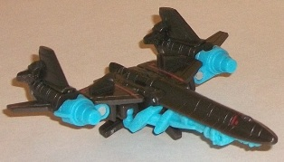 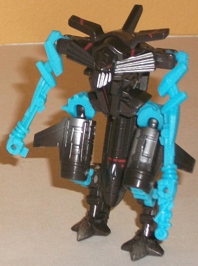
Allegiance : Autobot
Size : Legend
Difficulty of Transformation : Very Easy
Color Scheme : Light electric blue, charcoal black, and some silver, and dull red
Individual Rating : 6.9
Set Price
: ~$22 U.S.
Overall Rating
: 5.9
(NOTE: Because this set is composed of repaints,
this is not a full-blown review. This mainly covers any changes made to
the set and the color scheme, and merely compares it to the original versions
of these molds. For a review on the original Rotf Legends Jetfire mold,
go
here
. For a review on the original
RotF Legends Megatron mold, go
here
.
For a review on the original RotF Legends Optimus Prime mold, go
here
.
For a review on the original TF1 Legends Starscream mold, go
here
.
For a review on the original RotF Legends The Fallen mold, go
here
.)
 Jetfire
Jetfire
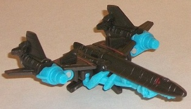
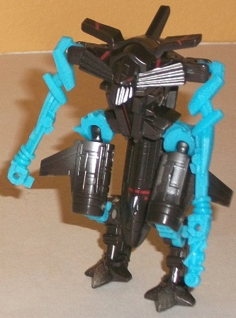
Allegiance
: Autobot
Size
: Legend
Difficulty of Transformation
: Very
Easy
Color Scheme
: Light electric blue,
charcoal black, and some silver, and dull red
Individual Rating
: 6.9
This "redeco" of Jetfire
keeps the same colors of black and red that make him look like a SR-71
Blackbird, though the black is a smidge lighter on this one-- almost a
very dark gray, in fact. The red lines and paint apps on his jet mode are
the same as well, though there's some more silver paint apps on his robot
mode, particularly on the upper legs, which have some nice "metallic worn/fade"
spray apps. Jetfire's Autobot symbol is also displayed quite proudly on
his hunchback on this version, instead of having a worn down Decepticon
symbol in its place like on the original version. The most obvious change
this time around is the changing of the light gray plastic to a rather
bright shade of electric blue, similar to the "Allspark Power" plastic
used in the latter half of the first movie line. It makes a mild bit of
sense if you consider Jetfire to be "powered up" if you link this version
with the included Optimus figure, but by itself it just doesn't look right.
Oh, electric blue contrasts decently enough with black-- almost any color
does-- but with the rest of Jetfire looking so realistically detailed,
it looks really out-of-place to have one of his main colors look like it
came straight from the Generation 2 toyline.
No mold changes have
been made to this version of Jetfire.
Megatron
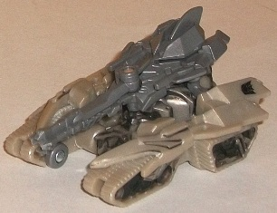
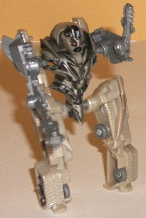
Allegiance
: Decepticon
Size
: Legend
Difficulty of Transformation
: Very
Easy
Color Scheme
: Dull milky grayish
brown, moderately light milky gray, black, and some light red
Individual Rating
: 5.7
Hasbro definitely doesn't
try to re-write the book with this redeco; Megatron is largely the same
color (gray) as his initial RotF release, but most of the plastic used
for his main body of the tank mode (or legs of the robot mode, take your
pick) is a bit more brownish of a shade, likely to give Megatron a dusty,
"desert-worn" look, given the bio of this set. He still has some of his
regular ol' light gray on his turret-arms, though. There's a very nice
black paint wash on most of his pieces-- pretty much on everything except
his turret-arms, actually-- which helps to bring out the "worn" effect
even better. However, the aforementioned paint wash is really the only
paint app on this toy (beyond the eyes), and without a real eye-catching
color to contrast against all the dull brown and gray, this redeco of Megatron
comes out looking pretty boring. Even moreso than his initial gray-and-black
release, and that's honestly a bit tough to do.
No mold changes have
been made to this version of Megatron.
 Optimus
Prime
Optimus
Prime
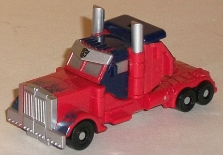
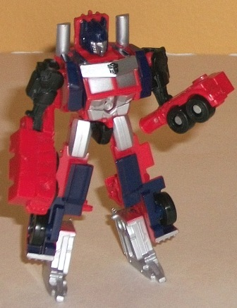
Allegiance
: Autobot
Size
: Legend
Difficulty of Transformation
: Very
Easy
Color Scheme
: Moderately light red,
dark blue, black, and some metallic dark blue and silver
Individual Rating
: 7.7
This repaint of Optimus
hearkens more back to his "classic" G1 color scheme, with a somewhat light
shade of red taking over much of the area that was gray on the other releases
of this toy. Combined with the dark blue middle section for contrast, it
may be a basic color scheme, but it still works on ol' Prime here. There's
also quite a bit of nice silver paint on him, like on the smokestacks,
grill, robot face, and windows-- places that were mostly left as barren
gray plastic on this toy's previous color schemes. He still has a bit of
Movie-style paint apps on him, though-- namely, the metallic dark blue
flames near the front, which help to add a bit more color variety to his
vehicle mode. (That said, I do wish a few more silver paint apps had been
added to the sides of said mode, as there's just a TAD too much red.) Overall
though, this is definitely my favorite of this mold's various paint jobs--
not so much because "it's G1", mind you, but the way the silver, dark blue,
and red play off each other-- as well as the AMOUNTS of each of them, roughly--
is the most visually pleasing.
No mold changes have
been made to this version of Optimus Prime.
Starscream
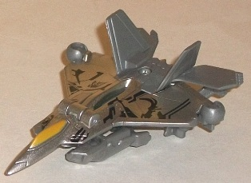
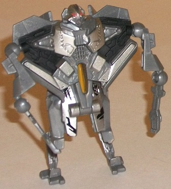
Allegiance
: Decepticon
Size
: Legend
Difficulty of Transformation
: Very
Easy
Color Scheme
: Metallic silver, moderately
light glittery gray, and some light red, black, and dull golden yellow
Individual Rating
: 3.6
I really wish they'd
stop repainting this awful mold and packing it in with other things I'm
interested in. That said, there ARE some pretty slick color picks this
time for it. After constantly getting blah brown and/or gray plastic on
this mold, this time around most of it (particularly the jet parts) are
painted a nice metallic silver, which looks pretty slick-- particularly
as it contrasts with the black Cybertronian "tattoos" on Starscream's wings.
The rest of Starscream's plastic is gray, but it's a glittery color of
gray, and so looks semi-metallic under the right light. It's not exactly
an exciting shade of the color, but it's considerably better-looking than
the milky light gray that's been on most versions of this mold up to this
point. The couple of accent paint apps-- such as the golden yellow cockpit
and the light red on the robot eyes-- also look good, though they're not
prominent enough to stop the color scheme from still mostly being different
shades of the same monochromatic scheme, metallic silver added or not.
No mold changes have
been made to this version of Starscream.
The
Fallen
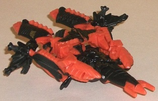
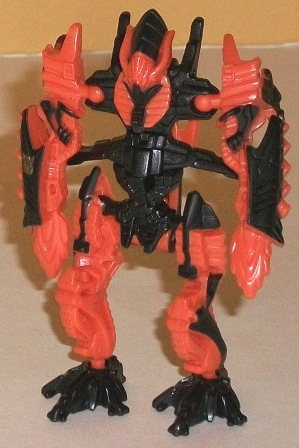
Allegiance
: Decepticon
Size
: Legend
Difficulty of Transformation
: Very
Easy
Color Scheme
: Black and moderately
light orange
Individual Rating
: 5.3
This redeco of The Fallen
is based on his
"burning" variant
, previously
used for the Voyager class toy. The black and light fiery orange contrast
remarkably well, and The Fallen has enough paint apps on him where one
color isn't overly predominant on any part of the toy. That said, there
are only two colors on this toy, period (well, unless you count the allegiance
symbol). Using a few accent colors for some places like the face, eyes,
and/or the jet mode nosecone would've helped turn this basic color scheme
from simply an improvement over the original's to something that really
popped.
No mold changes have
been made to this version of The Fallen.
"The Victory of the Fallen" set is probably a set best recommended for those people who A. like these little miniature TFs (or simply don't have the cash on hand to get the bigger versions of the characters) and B. have few, if any, of the molds in this set. Although the molds in this pack range from pretty nice to downright awful, no new characters are introduced in this 5-pack, nor are any of the color schemes completely unlike any other versions of these characters, to boot. That said, most of the color schemes on the toys in this set are either better than any of their previous version's colors or at least on par with them, so pallete-wise (and value-wise) it's a fairly wise choice for those who want small versions of these major RotF characters. But if you don't fit both of the criteria mentioned above, then this set is a very easy pass.
Reviews by Beastbot